Royal Duos
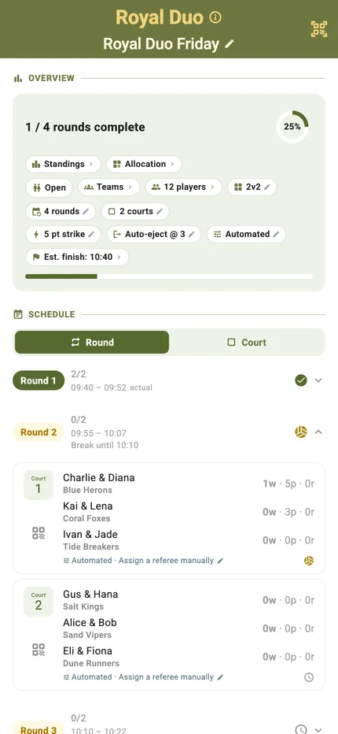
Royal Duos is a team competition played King-of-the-Court style. You enter as a fixed pair and keep that partner for the entire tournament, so the ranking is by team rather than by player.
Each round spreads the standing duos across the courts — you meet different opponents every round without ever changing partner. Within a court, teams cycle on and off as they win or lose; only the team currently on court can score.
If one partner has to leave, you can sit the duo out for a single round or take it out of the tournament for good. There are no stand-ins here: half a duo is not a competitor, and the pair keeps whatever it has already earned.
Build your duos, set the courts, rounds and round length, and go.
Best for
- Partners who want to play a queue mode together instead of being split up by the draw
- Clubs running a team ranking on a single evening, without a fixture list to schedule
- Groups who like the pace of King of the Court but want a table that credits the pair
Finding it in the app
Royal Duos sits under Team Competitions in the TournaQ Arena, beneath a Queue Modes subheading — the roster is fixed teams and the ranking is by team, which is what puts it there rather than with the Scramble Modes.

The Arena
Every format the app can run, grouped by the kind of session it suits. The number on a card is how many of those you have run.
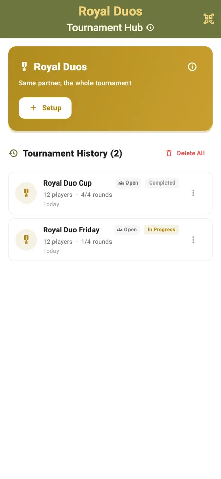
The Royal Duos hub
New Tournament starts a session. Below it sits your history, each entry showing the date, the player count and how far it got.
Setting it up
Build the duos, set the courts, the rounds and the round length. Every field feeds the Schedule Preview, so the predicted finish moves as you change your mind.
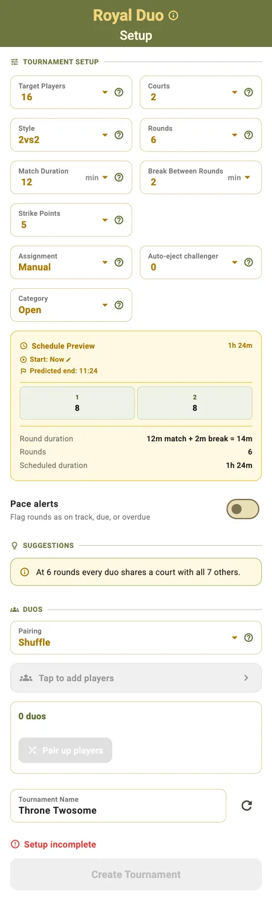
One form, one roster
The king settings — strike target, assignment mode, auto-eject — sit above a single Duos section. There is no Placeholder or Jumper choice here: Royal Rotations needs one for the player a reshuffle cannot pair, and Royal Duos has no such player.
Create stays disabled while anyone on the roster is still unpaired. A duo that is one player short is fine — its empty seat plays as a placeholder, and the team scores like any other.
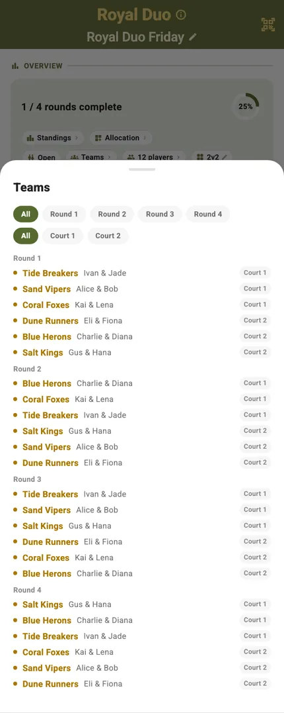
Where the duos come from
Shuffle hands it a list of players and draws the pairs for you — redraw the whole set, or swap a single pairing, right up until the tournament starts. Pick teams lets you enter the duos yourself, from your team hub in Administration or built here on the spot.
The session at a glance
One screen carries several courts at once: how far along you are, which duos are where, who is queuing, and when you will finish.
Progress and settings in one row
Rounds complete, a progress ring and a row of pills — standings, allocation, duos, format, strike target, assignment and estimated finish. A pill with a pencil can still be changed; one with a lock was fixed when play started.
Round by round, or court by court
The schedule groups by round out of the box. Switch it to Court and each court lists its own sequence — which is the view you want when three courts are running their own king at once.
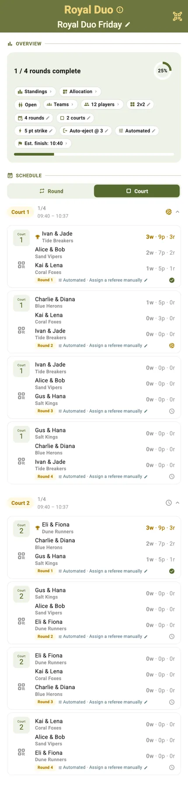
Who is on which court
The allocation grid lays every round against every court. The pairs never change, so what this screen shows is whether the draw is spreading the opponents around evenly.
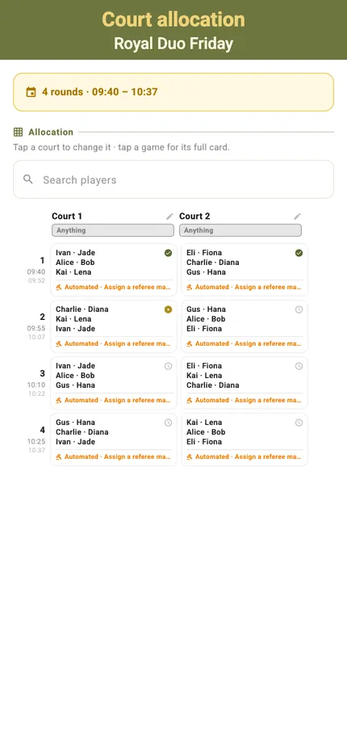
Scoring a match
Each court runs its own king: the duo on, the duo challenging, and the queue behind them. Which of these three cards you get is decided by the assignment mode you chose at setup.
Manual
Nobody is seated for you. The card offers the fairest pairings it can find on the left and the whole queue on the right — one tap on a suggestion starts that side immediately. There is no challenger queue, because you decide who comes on next.
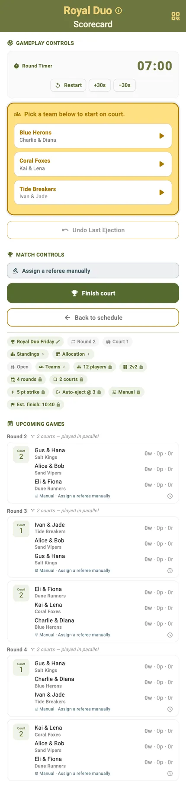
Automated
The queue fills the chain for you: who is on court, who challenges next, who is up after them. Re-roll if a pairing looks wrong, and the rest of the queue shuffles up behind it.
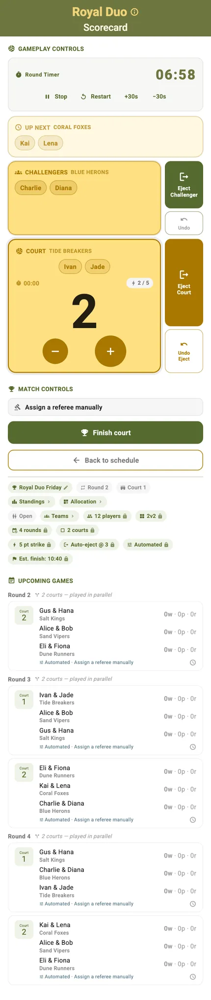
Auto All-Play
Adds a third tier and a scorekeeper drawn from outside the rotation, so everyone at the court has a job. It needs a fuller court than the other two modes — the queue is longer by a whole side.
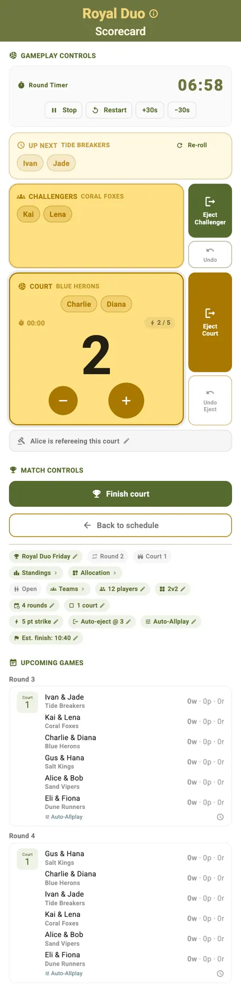
One partner, a moving queue
The partners are settled before the first whistle. What rotates is the queue inside each round — and TournaQ runs it.
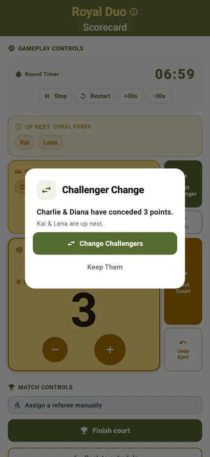
Challengers rotate automatically
When a hold ends the next duo comes on and the card says who they are. Nobody has to remember whose turn it was, and nobody quietly skips the queue.
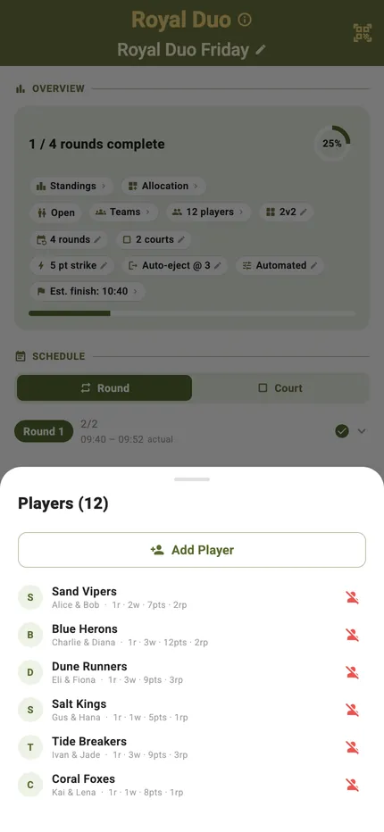
If a partner has to leave
Sit the duo out for a single round and it is back for the next one, or take it out of the tournament for good. Either way it keeps the points it has already earned — and there are no stand-ins, because half a duo is not a competitor.
Standings, live and final
The pairs are fixed, so the ranking is by team — points follow the duo, not the two players separately.
Live standings
Every duo with its points, games played and win record, ordered as it stands right now. Players check it between rounds without asking anyone.
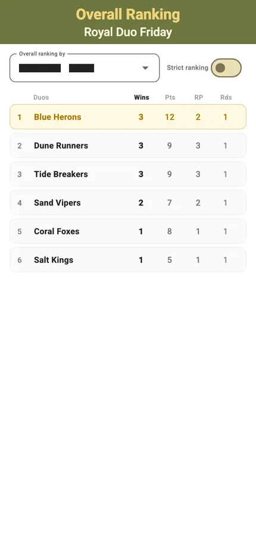
Final rankings
When the last round is in, the table closes with the winning duo at the top. A pair that retired early keeps its figures and is flagged, rather than dropping off the table.
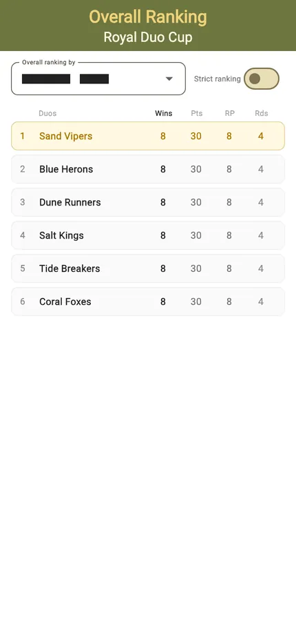
The finished session
The schedule keeps every result. A completed session stays in the hub with all its scores, so a question about last month's session has an answer.
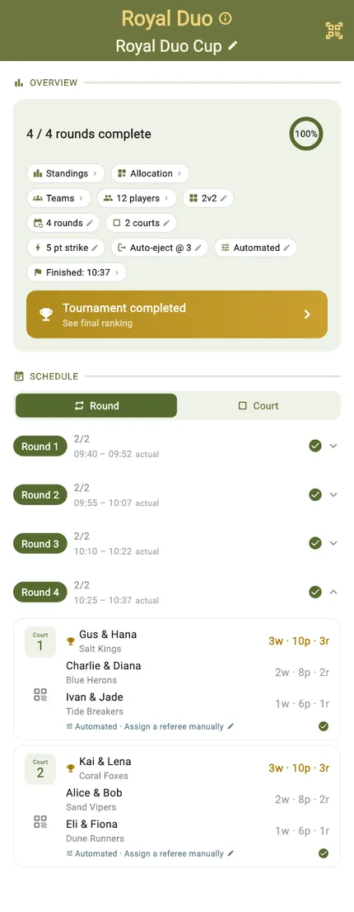
Start to finish
- Open the TournaQ Arena and pick Royal Duos, under Team Competitions.
- Tap New Tournament.
- Set the courts, rounds, match length and the strike target.
- Choose your pairing: Shuffle to draw the duos from a player list, or Pick teams to enter them yourself.
- Pair everyone up — Create stays disabled while a player is still loose.
- Name the session and tap Create Tournament.
- Open a court and start the timer.
- Tap to award each point; undo takes back the last one.
- A strike ends the hold — the next duo rotates on automatically.
- Play out the rounds and read the final team rankings.
Have a question about Royal Duos, spotted something missing, or want to suggest an improvement?